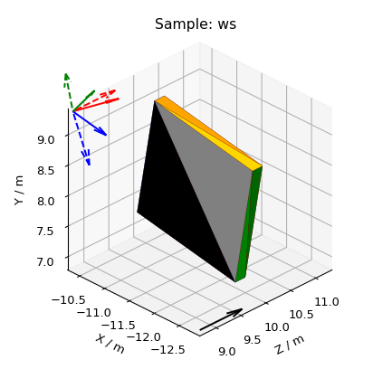
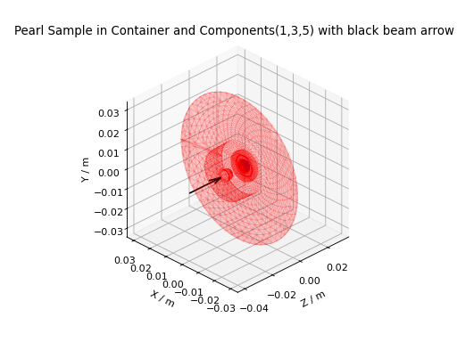
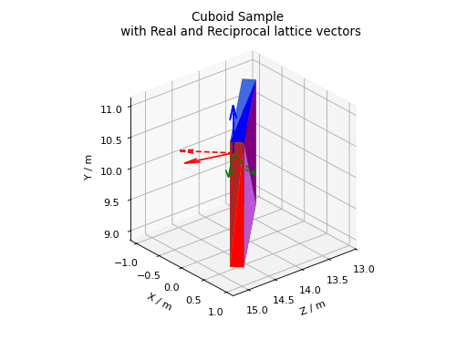

3D Mesh Plots for Sample Shapes#
Other Plot Docs
Here the mesh is plotted as a Poly3DCollection Polygon.
These sample shapes can be created with SetSample v1, LoadSampleShape v1 or LoadSampleEnvironment v1 and copied using CopySample v1. For help defining CSG Shapes and Rotations, see How To Define Geometric Shape.
Workbench#
To quickly plot all Sample, Container and Component shapes attached to a workspace, right-click on it
in the Workspaces Toolbox and select Show Sample Shape. A black arrow will be added for the beam direction
and, if there is a UB matrix, colored arrows for lattice vectors.
The real lattice vectors \(a,\ b,\ c\) are represented by solid line arrows in red, green and blue, respectively.
Similarly, the reciprocal lattice vectors \(a^*,\ b^*,\ c^*\)
are represented by dashed line arrows in red, green and blue, respectively.
A sample shape plot also takes into account any goniometer rotations.
{kind=link}

Scripting#
Here are some examples of what you can achieve by plotting the sample shapes with a script. Click on Source Code
above each plot (only available on html page) to download the relevant code snippet.
Scripting is useful to show only certain component shapes. For help defining Containers and Components, see Sample Environment. Note Component index 0 is usually the Container.
(Source code, png, hires.png, pdf)
{kind=link}
{kind=link}

Plot a cuboid sample shape, rotate it by the goniometer and add lattice vector arrows.
(Source code, png, hires.png, pdf)
{kind=link}
{kind=link}

Other Plotting Documentation
See here for custom color cycles and colormaps